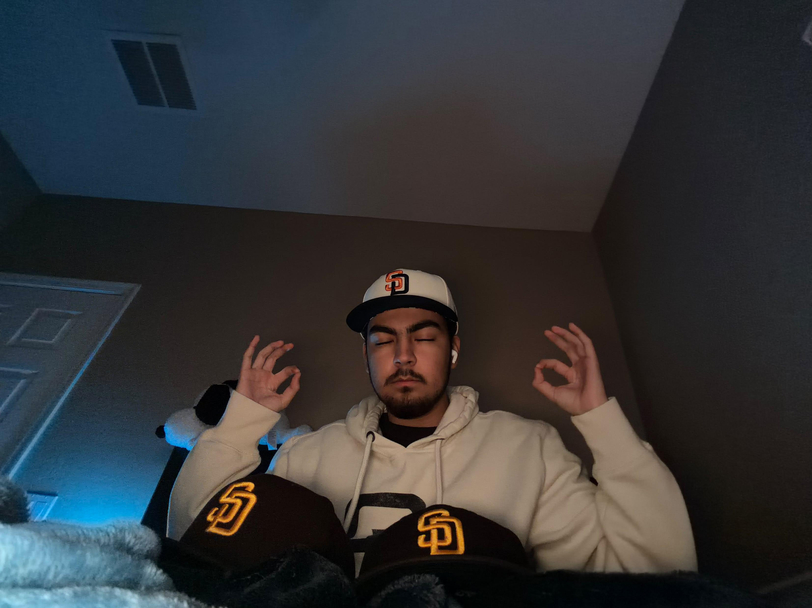

Adam Cecilio | The Recorder


This guy is very shy. but once he's with his friends he starts to be chaotic he also to plan ideas to the point where it can be dangerous but he's a fun guy to be with.
He also likes
- K-on,
- Baseball
- Ted Lasso
- Basketball
Karlo Gambino | The Actor
This actor perfers to be alone because he wants to focus on soccer, but when he becomes an actor he becomes one of the most silliest person of the series along with the main character.
Sergio Ruiz Herrera | The Main character
This main character is very energetic and sometimes short tepmered but he always find a way to screw people up. He Especialy loves to be with his friends, and when he's not with his friends he'll be depressed, but most of the time he will play some games because he has nothing to do with his free time.
Jermiah Abraham Cuamba | The Photographer

Description
This introvert doesnt want to be speak. This guy CAN'T beat Tartarus even though his best run was 32%. Sergio's not sure though. It could be higher, but he still isn't on Tartarus at this moment. He also does Photography for Business. Down below is his schedule and his Info.
| Dates | Sunday | Monday | Tuesday | Wednesday | Thursday | Friday | Saturday |
|---|---|---|---|---|---|---|---|
| Availability | Available | ||||||